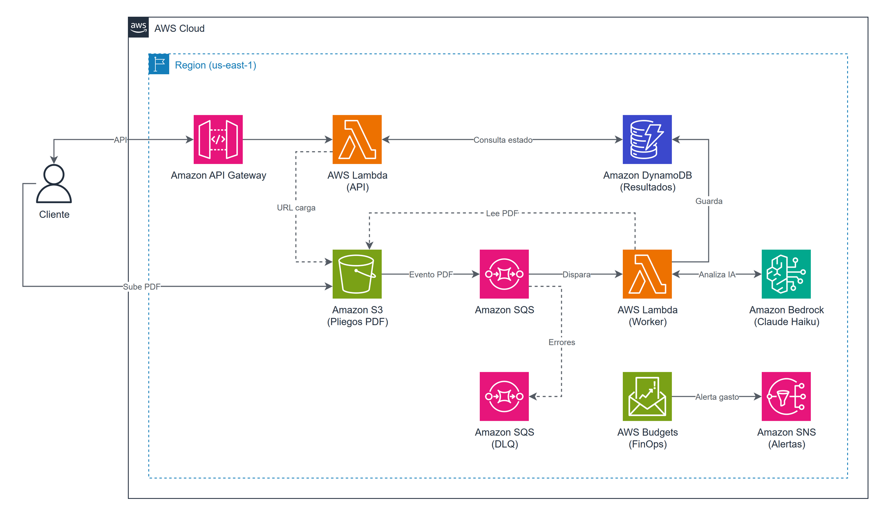

Pipeline serverless event-driven en AWS para auditar riesgos contractuales (garantías, multas y plazos) en bases de licitación de Mercado Público (Ley 19.886). Desacoplado con S3 y SQS + DLQ, inferencia gestionada con Amazon Bedrock, despliegue vía AWS SAM y control de costos FinOps con costo fijo $0 bajo Free Tier.
Mercado Público RAG en AWS
Serverless & Applied AI
Amazon Bedrock
AWS Lambda
S3
SQS / DLQ
DynamoDB
AWS SAM
FinOps